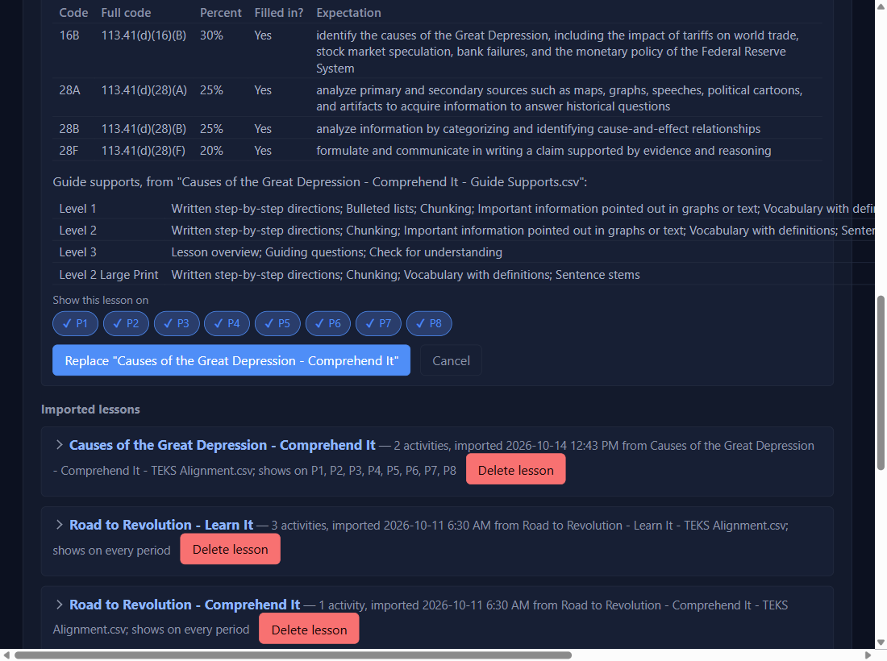
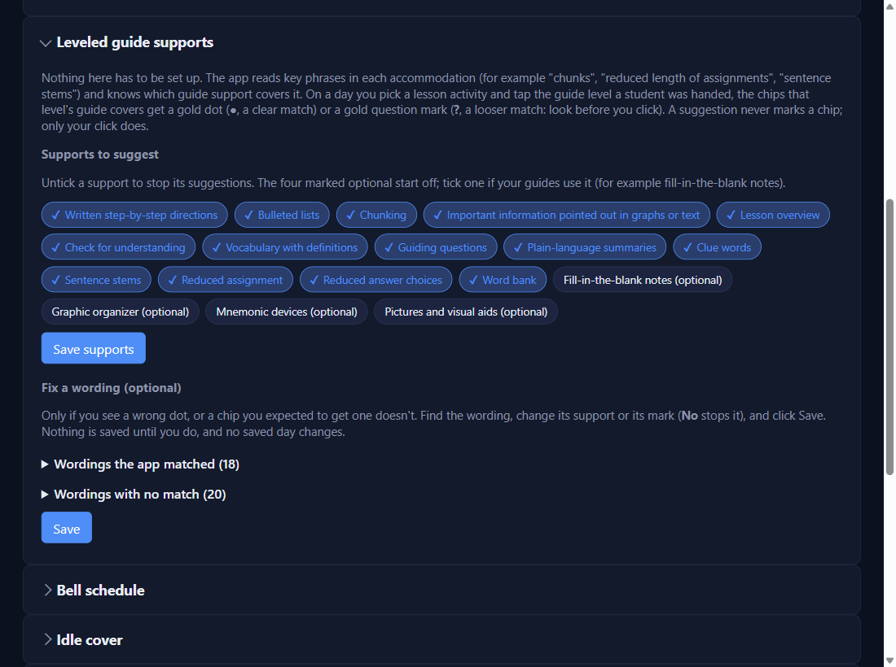
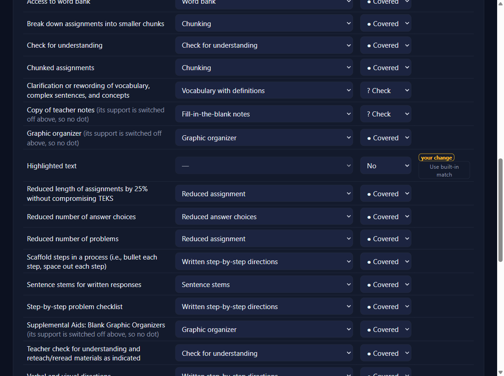

Leveled guides: set up
Keep both files from the builder in one folder
No builder yet? See Set up the Leveled Guide BuilderNEWfor version 0.4.18 and beyond. The builder makes … - TEKS Alignment.csv and … - Guide Supports.csv. Save them together (your Downloads folder is fine). Their names must differ only at the end: if your browser saved … - Guide Supports (1).csv, take the (1) off.
Settings → Lesson activities → Import lesson CSV…, and pick the TEKS Alignment file
Pick the TEKS Alignment file, not the Guide Supports file. The app finds the Guide Supports file beside it by itself. Under the activities, Guide supports lists what each level's guide has, one line each with a count; hover a line that ends in … to see it all. Tick your periods and click Import (or Replace "…" for a lesson you already had: its ticks carry over and no saved day changes).

Optional: Settings → Leveled guide supports → Supports to suggest
Nothing here has to be set up: the app reads key phrases in each accommodation ("chunks", "reduced length of assignments", "sentence stems") to know which support covers it. Untick a support to stop its suggestions, or tick one of the four (optional) ones if your guides use it (for example fill-in-the-blank notes), then Save supports.

Optional: fix a wording the app matches wrong
Only if you see a wrong dot, or a dot you expected is missing. Open Wordings the app matched (or with no match), change that wording's support or mark (No stops it), and click Save. The row says your change; Use built-in match puts it back.

✓ You'll know it worked
- The preview lists Guide supports by level before you import.
- The line after importing ends
Guide supports: 22 saved.
✕ Avoid these
- Picking the Guide Supports file in Import. Pick the TEKS Alignment file; the supports come with it.
- Files in different folders. The app only looks beside the TEKS Alignment file.
⚠ If you see this
The first line must be exactly Lesson,Activity,TEKS,Percent,Expectation — this file's first line is Lesson,Level,SupportYou picked the Guide Supports file. Import again and pick the TEKS Alignment file.
Guide supports: none…The app found no Guide Supports file beside it. Check it's in the same folder and named exactly like the TEKS file, ending
- Guide Supports.csv.In "… - Guide Supports.csv": "…" isn't one of the guide support namesThe builder misspelled a support on that line. Fix the line (or ask the builder to remake the file) and import again.